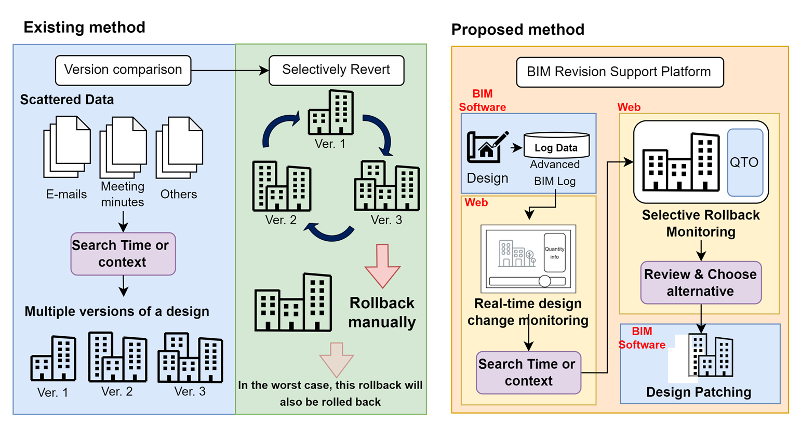

Design Change Monitoring
Reconstructs time-indexed model states from the ShapeLog and TimeLog to visualize geometry and quantity changes along the design timeline.
Building Informatics Group
Lightweight, log-driven change management that tracks element-level geometry and attributes, enables time-based visualization, and applies selective rollback directly in BIM authoring tools.
The proposed workflow captures modeling events as augmented BIM logs, reconstructs design states along a timeline, and selectively restores only the parts that need to be reverted. The result is precise, localized rollback without full model reversion.
Existing BIM change management relies on heavy, proprietary systems and post-hoc analysis. This study introduces an augmented BIM log schema that records element-level geometry and properties in a lightweight, structured format to enable real-time monitoring and interactive rollback. Three modules are implemented: design change monitoring, selective rollback, and design patching. Validation across multi-stage design changes reports 98.6% tracking accuracy and 93.6% accuracy for partial restoration. The results confirm the feasibility of log-based, selective rollback in practical BIM workflows.

Reconstructs time-indexed model states from the ShapeLog and TimeLog to visualize geometry and quantity changes along the design timeline.
Filters elements by user-defined spatial bounds, enabling region-specific time navigation and quantity analysis without changing the live model.
Applies a filtered reverse log in the BIM authoring environment to restore only the targeted elements within a chosen time window.
The schema separates temporal state tracking (TimeLog) from element state definitions (ShapeLog). Element versions are indexed to preserve edit history and allow precise reconstruction of previous design states without storing full snapshots.
Design patching reverses only the selected portion of the modeling history. By generating a PartialReversedLog, the system recreates, modifies, or deletes elements within a specified time window and spatial region while preserving the rest of the model.
JSON Schema overview used for time-series logging of element states and quantity takeoffs.
Navigate the entire model timeline, inspect quantities, and explore element-level metadata synchronized with each timestamp.
Define a spatial region, isolate affected elements, and compare changes without disturbing the rest of the model.
Current patching does not automatically re-establish complex relational constraints such as Join or Split, and the scope is limited to architectural categories. Future work will expand to structural and MEP elements and incorporate relationship-aware logging for more robust rollback.
The augmented BIM log schema, example datasets, and demonstration materials are publicly available in the project repository.
Supported by the National Research Foundation of Korea (RS-2025-23324132).
Author: dlwjdgjs98@yonsei.ac.kr
Corresponding author: glee@yonsei.ac.kr